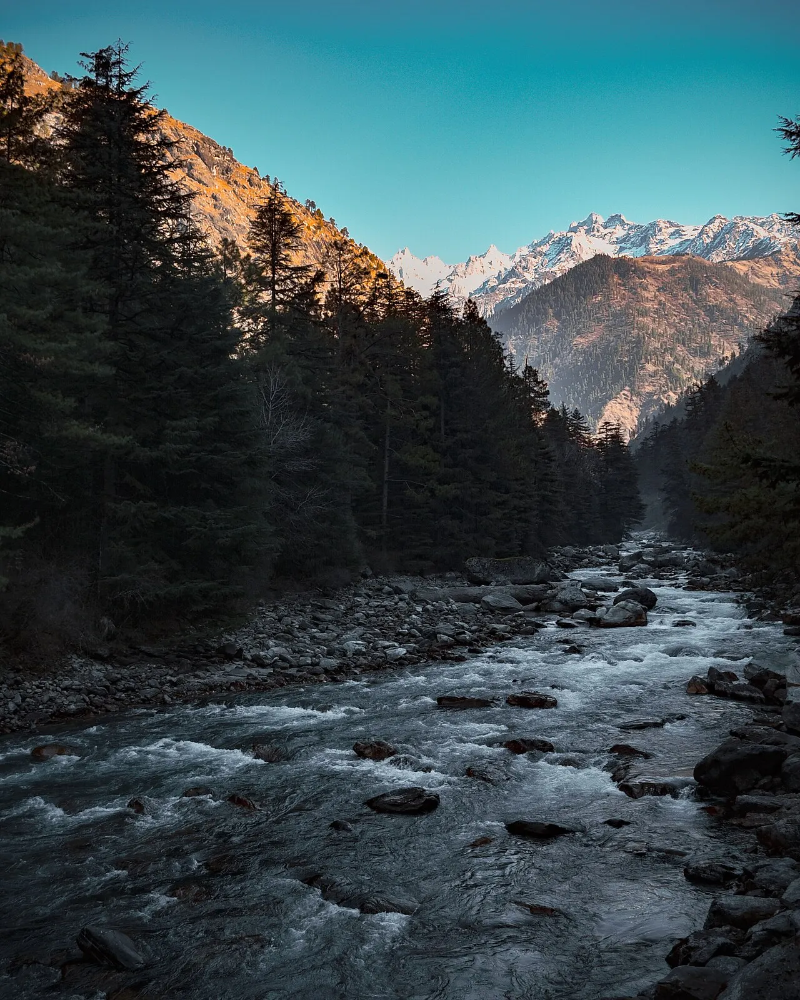

Places covered
Manali → Kasol → Tosh → Manali
Your day-by-day journey
Suggested itinerary. Attractions, travel times and arrangements are subject to your written quote and local conditions.
Day 1
Arrive in Manali; transfer and check in after arrival. If time permits, see Hadimba Temple and Solang Valley. Overnight in Manali.
Day 2
Travel from Manali to Kasol; visit Parvati Valley riverside scenery. Admission, activity timings and accessibility are subject to local conditions. Overnight in Kasol.
Day 3
Travel from Kasol to Tosh; visit mountain village walks and valley views. Admission, activity timings and accessibility are subject to local conditions. Overnight in Tosh.
Day 4
Travel from Tosh to Manali; visit Hadimba Temple and Solang Valley. Admission, activity timings and accessibility are subject to local conditions. Overnight in Manali.
Day 5
After breakfast, check out and depart from Manali. Departure transfer, road timing and any onward flight or train will be confirmed in the final quotation.
Before you travel
Accommodation, meals, transport, tickets, permits, inclusions and exclusions are confirmed only in your written quotation. Share accessibility needs, children's ages and your preferred pace when enquiring. Activities depend on weather, local access and availability.
Frequently asked questions
Can this tour be customised?
Yes. Dates, routing, accommodation and activities can be adjusted after enquiry.
Are hotels and departures confirmed?
No. Availability, itinerary feasibility and final inclusions require written confirmation.